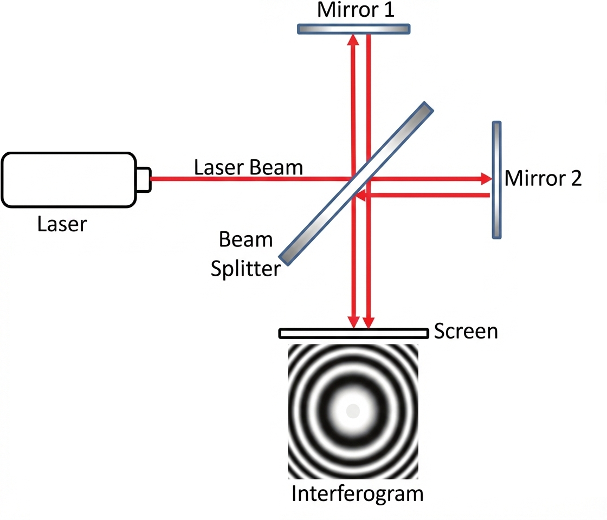
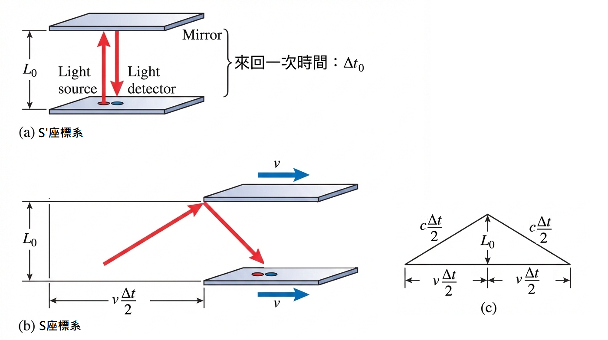
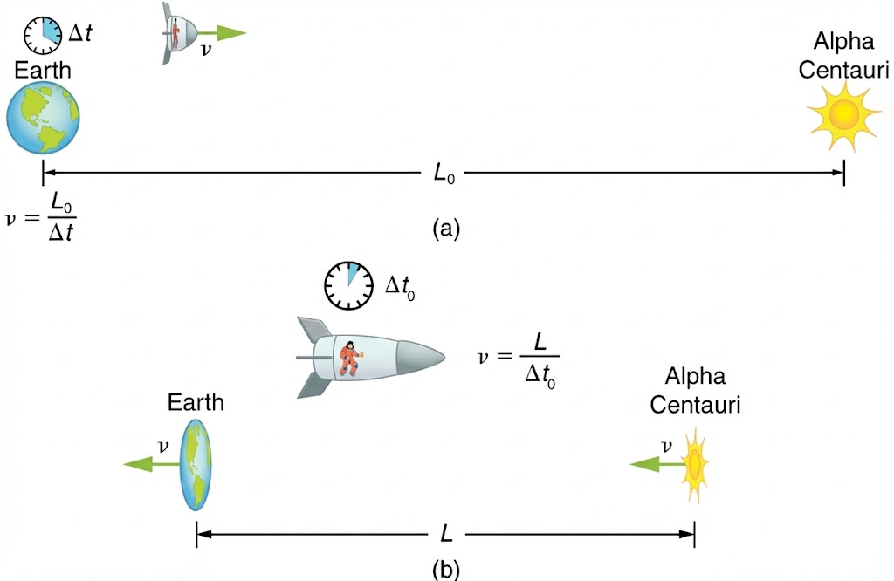
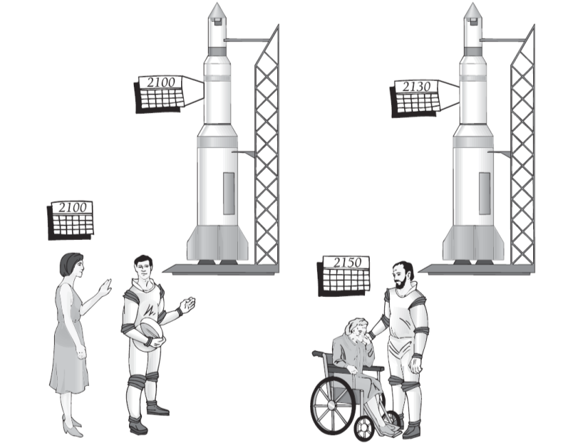

Modern Physics - Relativity#
日期: 2026.03.03
1.1 特殊相對論 (Special Relativity)#
參考座標系 (Frame of Reference)#
慣性參考座標系 (Inertial Frame of Reference)： 指的是一個不受外力作用（或合力為零）的座標系。在此座標系中，靜止的物體保持靜止，運動中的物體則會持續以等速度直線移動（即滿足牛頓第一運動定律）。
特殊相對論的兩大假設#
特殊相對論建立在以下兩個基本假設之上，主要探討無重力、無加速度的慣性系統：
相對性原理 (The Principle of Relativity)： 所有物理定律在所有慣性座標系中皆具有相同的數學形式，沒有任何一個慣性座標系比其他座標系更「優越」或「特殊」。
光速不變原理 (The Constancy of the Speed of Light)： 實驗證實，光在真空中的傳播速度 \(c\)（約為 299,792,458 \([\text{m}\text{s}^{-1}]\)），對於任何慣性座標系的觀察者而言皆相同，與光源本身的運動速度無關。
麥克生-莫雷 干涉實驗 (Michelson-Morley Experiment)#
描述： 利用干涉儀，將單一光源透過半反半透鏡分為互相垂直的兩道光束，經反射鏡反射後重新匯聚於屏幕上，觀察是否因地球在「乙太」(Aether) 中運動而 產生相位差 與 *干涉條紋的移動。
結果： 無論在什麼季節、什麼方向進行測量，皆沒有觀察到預期的干涉條紋移動（即無相位差）。
結論：
光在所有慣性坐標系中的速度皆相同。
宇宙中不存在「絕對靜止」的參考座標系。
傳遞光的介質「乙太」並不存在，光可以在真空中傳播。

補充：廣義相對論 (General Relativity) 旨在描述物質如何彎曲時空幾何，以及這種彎曲如何表現為重力。其處理的是包含重力與加速度的「非慣性座標系」。本章後續討論均限制於特殊相對論範疇。
1.2 伽利略轉換 (Galilean Transformation)#
假設有一慣性坐標系 \(S\) 具有 \(x, y, z\) 軸。另一個慣性坐標系 \(S'\) 以相對速度 \(v\) 沿著 \(x\) 軸正方向移動。在牛頓力學的絕對時空觀下，兩座標系的轉換關係如下： \( x=1, y=2 \)
伽利略轉換的失效： 如果我們在 \(S'\) 座標系（例如一列高速行駛的火車）上向前方發射一道光，依據伽利略速度疊加原理，站在地面 (\(S\) 座標系) 的觀察者測量到的光速將會是 \(c_{obs} = c + v\)。這直接違背了特殊相對論的第二假設：「光速在所有慣性座標系中皆恆定為 \(c\)」。因此我們必須尋找一組新的轉換方程式。
1.3 羅倫茲轉換 (Lorentz Transformation)#
物理哲學觀： 物理學的推論往往始於「假設 (postulate)」。這些假設並非純粹憑空推導而來，而是從無數次實驗中歸納得出的公理。直到有新的實驗現象（如光速不變）挑戰了舊有假設（如牛頓的絕對時空），物理學家便會提出新的假設來修正理論。
為了滿足光速不變原理，我們假設新的轉換（羅倫茲轉換）相對於伽利略轉換必須保持線性關係（以確保慣性運動在轉換後仍為慣性運動）。
在羅倫茲轉換中：
會改變的變數（相對量）： 空間座標 (\(x, y, z\))、時間 (\(t\))、動量 (\(p\))、動能 (\(KE\)) 等。
不改變的變數（不變量）： 相對速度 (\(v\))、真空中光速 (\(c\))、靜止質量 (\(m_0\)) 等。
推導過程#
我們假設存在一個轉換常數 \(k\)，使得：
為了找出 \(k\)，我們利用光速不變原理。假設在 \(t = t' = 0\) 時，原點重合，且發出一道閃光。經過一段時間後，兩座標系觀察到的波前方程式必分別為 \(\left \{ \begin{aligned}x &= ct \\ x' &= ct'\end{aligned}\right .\)。將其代入上述假設：
我們定義此因子為 羅倫茲因子 \(\gamma\) (Lorentz factor)
因此，空間的轉換方程式為：
1.4 時間膨脹 (Time Dilation)#
「飛船繞地球轉的例子是不是很不好？」 如果飛船在「繞地球轉」就具有向心加速度，屬於非慣性座標系，嚴格來說必須使用廣義相對論來處理。為了精確說明特殊相對論，我們應將例子修正為：「飛船以等速度 0.8c 沿直線遠離地球」。
核心概念： 靜止的觀察者會測量到，相對於他運動的時鐘，其滴答速度比他身旁靜止的時鐘還要慢。所謂的 原時 (Proper time, \(\Delta t_0\))，是指在同一個空間座標點上發生的兩個事件之間的時間間隔（即跟著時鐘一起移動的人所測量到的時間，事件可以例如說光發射的時間點、光反射的時間點）。
移動光鐘實驗 (Light Clock Derivation)#

假設飛船上有一個光鐘，光子在相距 \(L_0\) 的兩面鏡子間上下反射。
在飛船上 (\(S'\) 座標系)： 觀察者看到光子直上直下，來回一次所需的時間為原時 \(\Delta t_0\)。
在地球上 (\(S\) 座標系)： 觀察者看到飛船以速度 \(v\) 前進，因此光子走的是斜線路徑、設地球觀察者測量到的時間為 \(\Delta t\)，根據畢氏定理：
將 \(L_0 = c \frac{\Delta t_0}{2}\) 代入：
開根號後得到時間膨脹公式：
因為 \(\gamma \ge 1\)，所以 \(\Delta t \ge \Delta t_0\)，這證明了「運動中的時鐘走得比較慢」。
針對你的疑問：「我搞混了，我們要證明的是 \(t' = \gamma(t - \frac{vx}{c^2})\) 嗎？」 這裡需要明確區分 「時間間隔 (Time Interval)」 與 「座標轉換 (Coordinate Transformation)」 上方證明的 \(\Delta t = \gamma \Delta t_0\) 是指兩個事件的時間差（且前提是這兩事件在 \(S'\) 座標系發生於同一個地點）。 若要推導時間的座標轉換 \(t'\)，可以將 \(x = \gamma(x' + vt')\) 代入 \(x' = \gamma(x - vt)\) 並解出 \(t'\)：
\[t' = \gamma \left( t - \frac{vx}{c^2} \right) \tag{1.4}\]這個式子說明了時間不只與觀察者的速度有關，還與事件發生的空間位置 \(x\) 有關，這正是「同時性的相對性」的數學表現。
1.5 長度收縮 (Length Contraction)#
核心概念： 靜止的觀察者會發現，相對於他運動的物體，在其運動方向上的長度會縮短。原長 (Proper length, \(L_0\)) 是指在與物體相對靜止的座標系中所測量到的長度。
推導過程#

假設一把尺相對於 \(S'\) 座標系靜止，長度為原長 \(L_0 = x_2' - x_1'\)。 我們站在 \(S\) 座標系測量這把移動中的尺，長度為 \(L = x_2 - x_1\)。 測量長度的關鍵條件是：必須「同時」紀錄尺的兩端，也就是在 \(S\) 座標系中 \(t_1 = t_2\)。
利用羅倫茲空間轉換式 \(x' = \gamma(x - vt)\) ，因為測量是同時進行的 (\(t_1 = t_2\))，包含 \(t\) 的項會互相抵消：
得到長度收縮公式：
因為 \(\gamma \ge 1\)，所以 \(L \le L_0\)，運動方向上的長度會被觀察到變短。
雙生子悖論 (Twin Paradox)#
這是一個探討相對性對稱破缺的經典案例。

情境： 雙胞胎迪克(Dick)在 20 歲時，以 0.8c 的速度搭乘太空船前往 20 光年遠的星球，隨後折返。珍(Jane)則留在地球。
矛盾點： 從地球的珍來看，迪克在高速運動，迪克的時間變慢了；但依據相對性原理，迪克也可以認為是地球在反向高速運動，珍的時間應該變慢。如果兩者都認為對方比較年輕，當他們重聚時會發生什麼事？
解答與邏輯銜接： 這個悖論的盲點在於「兩人的經歷並非完全對稱」。珍始終待在同一個慣性座標系中；然而，迪克在到達目的地並掉頭折返時，必須經歷減速與加速的過程，這導致迪克從一個慣性座標系切換到了另一個慣性座標系。因此，狹義相對論的時間膨脹對稱性被打破。
計算結果：
珍在地球上的等待時間（地球視角計算）：去程 \(\frac{20\text{ly}}{0.8c} = 25\) 年，回程 25 年，總共 50 年。珍重聚時 70 歲。
迪克的經歷時間（計算原時）：因為 \(\gamma = \frac{1}{\sqrt{1 - 0.8^2}} = 1.67\)，迪克的原時流逝為 \(\Delta t_0 = \frac{\Delta t}{\gamma} = \frac{25}{1.67} = 15\) 年。去程加回程共 30 年。迪克重聚時 50 歲。
結論： 迪克的生命並未被「拉長」，他實實在在地只度過了 30 年的生物歲月。
1.6 相對論動量 (Relativistic Momentum)#
針對你的疑問：「為什麼要保全動量守恆，甚至不惜違反質量守恆？」 這牽涉到理論物理學中非常深刻的「諾特定理 (Noether’s Theorem)」。該定理指出，每一個連續的對稱性都對應一個守恆律。空間的平移對稱性要求動量必須絕對守恆（如果動量不守恆，代表物理定律會因為你在宇宙中的位置不同而改變，這違背了相對性原理）。相對地，「質量守恆」只是一個低速世界下的近似經驗法則。在相對論中，質量與能量是可以互相轉換的，真正守恆的是「總能量-動量」。
為了避免混淆，現代物理學強烈建議：\(m_0\) 專門代表靜止質量 (Rest mass)，它是一個洛倫茲不變量 (Lorentz Invariant)，所有觀察者看這個數值都一樣。 我們放棄使用「動質量 (Relativistic mass, \(m = \gamma m_0\))」這個容易引起誤會的名詞，而是將 \(\gamma\) 歸因於速度與座標的變換。
相對論動量推導 (經由原時 \(\tau\))#
在古典力學中，動量定義為 \(\mathbf{p} = m_0 \frac{d\mathbf{x}}{dt}\)。但在相對論中，時間 \(t\) 會隨著座標系改變，導致這樣定義出來的動量在座標轉換下不守恆。 為了構造一個在所有慣性系都協變的動量，我們必須對「不變量」進行微分。空間座標 \(\mathbf{x}\) 微分的對象應改為不變的原時 (Proper time, \(\tau\))。
根據時間膨脹公式(1.3)，微小時間間隔關係為 \(dt = \gamma d\tau\)，所以：
因此，相對論動量的正確定義式為：
1.7 質量與能量 (Mass and Energy)#
已知與假設#
【已知 1】分部積分法 Integration by parts:
\(\int x \, dy = xy - \int y \, dx\)
我們可透過功能定理 (Work-Energy Theorem) 來推導相對論中的動能 (\(KE\))。動能等於外力對物體從靜止 (\(v=0\)) 加速到速度 \(v\) 所作的功。
物理意義結論：
動能 (Kinetic Energy)： \(KE = (\gamma - 1)m_0 c^2\)，代表物體因運動而多出的能量。
總能量 (Total Energy)： \(E = \gamma m_0 c^2\)，這是動能與靜止能量的總和。
靜止能量 (Rest Energy)： \(E_0 = m_0 c^2\)，即使物體不動，其質量本身就蘊含著龐大的能量（這也就是著名的質能等價公式）。
當低速的情況下( \(c\gg v\) )我們可以從相對論動能推得經典動能，具體推導請看這裡
1.8 能量與動量關係式 (Energy and Momentum)#
我們希望找出不包含速度變數 \(v\) 的能量與動量關係。 已知總能量 \(E = \gamma m_0 c^2\) 與動量 \(p = \gamma m_0 v\)。
將兩者平方後相減：
針對你的疑問：「P 是向量？更正確的寫法是 \(\mathbf{P} \cdot \mathbf{P} c^2\) 嗎？」 非常精準的問題！是的，動量 \(\mathbf{p}\) 是一個三維空間向量，包含 \((p_x, p_y, p_z)\)。 因此，公式中的 \(p^2\) 嚴格來說確實應該寫作內積 \(\mathbf{p} \cdot \mathbf{p} = p_x^2 + p_y^2 + p_z^2\) 的純量大小。公式 \((1.8)\) 更嚴謹的寫法正如你所說，是：
\[E^2 = (m_0 c^2)^2 + (\mathbf{p} \cdot \mathbf{p}) c^2\]關於光速 \(c\)： 光速 \(c\) (\(299,792,458\) m/s) 是一個「純量」，代表速度的大小。但光子的「運動方向」可以用速度向量 \(\mathbf{v}\) (大小為 \(c\)) 來表示。 具體例子（光子）： 光子沒有靜止質量 (\(m_0 = 0\))，但光子是有動量的！代入公式 \((1.8)\)：
\[E^2 = (0 \cdot c^2)^2 + p^2 c^2 \implies E = pc\]在量子力學中，光子的動量向量大小由 \(p = \frac{h}{\lambda}\) 決定（\(h\) 為普朗克常數），而方向就是光的傳播方向。所以光子雖然沒有質量，卻具有向量形式的動量，可以對物體產生「光壓」。